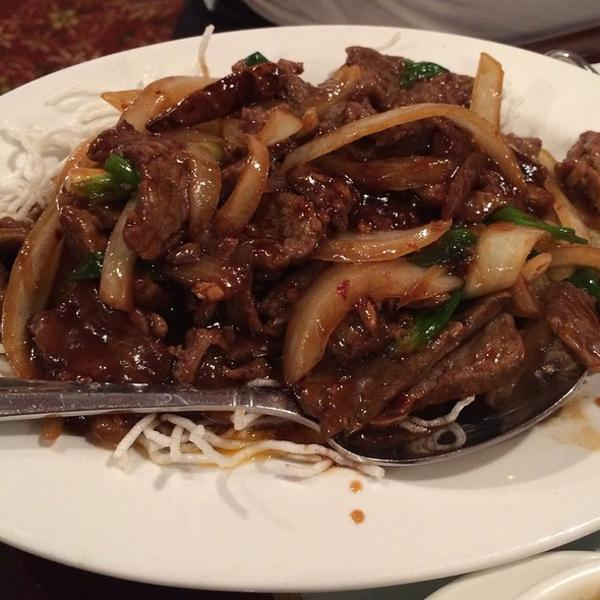

Home
How to Make Mongolian Beef

Here are the steps on how to make Mongolian beef:
Ingredients:
- 1 pound flank steak, thinly sliced
- 1/4 cup cornstarch
- 1 tablespoon soy sauce
- 1 tablespoon brown sugar
- 1 tablespoon rice vinegar
- 1 teaspoon sesame oil
- 1/2 teaspoon ground ginger
- 1/4 teaspoon black pepper
- 1/4 cup vegetable oil
- 1/2 onion, chopped
- 1 green bell pepper, chopped
- 1 red bell pepper, chopped
- 1/2 cup beef broth
- 1/4 cup soy sauce
- 1 tablespoon cornstarch
- 1/4 teaspoon sesame oil
Instructions:
- In a large bowl, combine the flank steak, cornstarch, soy sauce, brown sugar, rice vinegar, sesame oil, ginger, and black pepper. Mix well to coat the beef.
- Heat 1/4 cup of the vegetable oil in a large skillet or wok over medium-high heat. Add the beef and cook, stirring occasionally, until browned on all sides. Remove the beef from the skillet and set aside.
- Add the remaining 1/4 cup of vegetable oil to the skillet. Add the onion, green bell pepper, and red bell pepper and cook, stirring occasionally, until softened, about 5 minutes.
- Return the beef to the skillet. Add the beef broth, soy sauce, and cornstarch. Bring to a boil, then reduce heat and simmer for 5 minutes, or until the sauce has thickened.
- Stir in the sesame oil and serve over rice.
Tips:
- You can use any type of beef you like, such as sirloin, chuck, or ribeye.
- If you don't have flank steak, you can use thinly sliced beef sirloin or ribeye.
- You can add any vegetables you like to your Mongolian beef, such as carrots, broccoli, or mushrooms.
- You can serve Mongolian beef over rice, noodles, or vegetables.
- Enjoy!